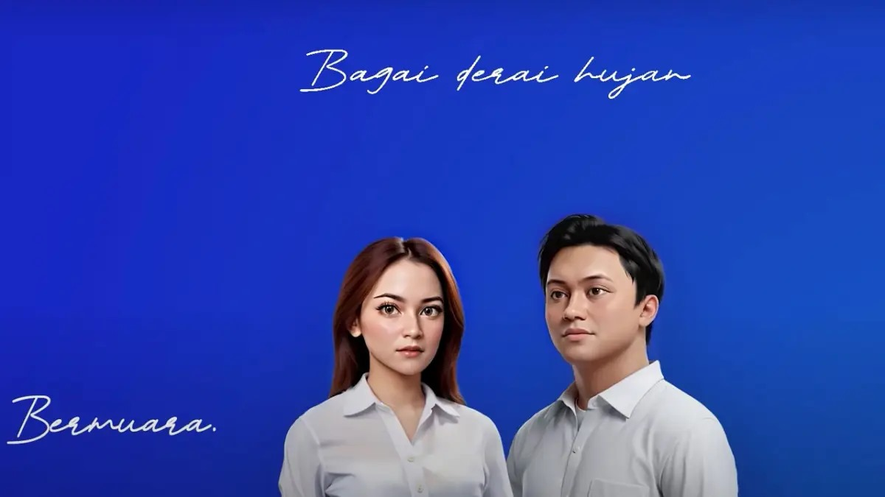

BERMUARA
Lagu dirilis pada tahun 2023, dinyanyikan oleh Mahalini dan Risky Febian. Dengan lirik yang mengekspresikan rasa syukur dan kebahagiaan atas cinta yang akhirnya menemukan tempatnya.
Click here to play song:
Jika kamu suka dengan lagunya, dengarkan secara resmi di Spotify
ADA
Lagu yang berjudul 'Ada' dirilis pada tahun 2022,yang dinyanyikan oleh Lyodra dan Afgan. Lagu ini bercerita tentang kerinduan dan perasaan cinta yang tetap ada meskipun ada jarak dan waktu yang memisahkan.
Click here to play song:
Jika kamu suka dengan lagunya, dengarkan secara resmi di Spotify
BERCINTA LEWAT KATA

Lagu yang berjudul 'Bercinta Lewat Kata' dirilis pada tahun 2021,karya Doone Maula.Lagu ini menggambarkan cinta yang terungkap melalui ungkapan-ungkapan kata yang indah sehingga menyentuh hati banyak orang.
Click here to play song:
Jika kamu suka dengan lagunya, dengarkan secara resmi di Spotify
RUMAH
Lagu yang berjudul 'Rumah' dirilis pada tahun 2024, karya Salma Salsabila. Lagu ini mengajak pendengar untuk merenungkan makna kebersamaan dan kedamaian yang tercipta dalam lingkungan keluarga.
Click here to play song:
Jika kamu suka dengan lagunya, dengarkan secara resmi di Spotify